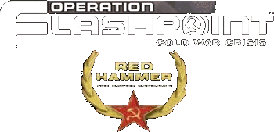
Владимир Чаплыгин
В данном гайде вы найдете полное прохождение всех двадцати миссий советской кампании Red Hammer. По сравнению с оригинальным Operation Flashpoint: Cold War Crisis, существенным образом пополнилось количество доступной игроку бронетехники и стрелкового оружия. Поэтому соответствующие разделы гайда, размещенного на диске к #12`2001 перекочевали в данный материал. Остальные аспекты игры коренных изменений, достойных упоминания в этом гайде, не претерпели. Так что, если у вас возникнут вопросы по классификации живой силы противника или проблемы, связанные с управлением солдата, отделения или правильным применением снайперских винтовок, то смело запускайтесь декабрьский диск.
I. Оружие пехоты и техника
Обсуждать все плюсы и минусы каждого вида вооружения можно до бесконечности. Игра OF:RH сделана настолько дотошно, что виртуальное оружие пехоты и техника имеют минимум коренных отличий от своих реальных прототипов. Так что наилучшим способом оценки доступного в игре оружия и техники будет анализ приведенных ниже показателей. Сравнивайте и делайте соответствующие выводы.
1. СССР
а) оружие пехоты
АK-74
тип вооружения - автомат
калибр - 5,45х39 мм
масса - 3,2 кг (с пустым магазином)
емкость магазина - 30 патронов
длина - 933 мм (700 мм со сложенным прикладом)
вид огня - одиночный, непрерывный
прицельная дальность стрельбы - 1000 м
темп стрельбы - 650 выстр/мин
начальная скорость пули - 900 м/с
АКС-74У
тип вооружения - автомат
калибр - 5,45х39,5 мм
масса - 2,7 кг
емкость магазина - 30 патронов
длина - 735 мм (490 мм со сложенным прикладом)
вид огня - одиночный, непрерывный
прицельная дальность стрельбы - 500 м
темп стрельбы - 650 выстр/мин
начальная скорость пули - 900 м/с
СВД
тип вооружения - снайперская винтовка
калибр - 7,62х54 мм
масса - 4,3 кг
емкость магазина - 10 патронов
длина - 1225 мм
вид огня - одиночный
прицельная дальность стрельбы - 1300 м
темп стрельбы - 30 выстр/мин
начальная скорость пули - 830 м/с
ПК
тип вооружения - ручной пулемет
калибр - 7,62х53 мм
масса - 10,49 кг
емкость магазина - 100 патронов
длина - 1173 мм
вид огня - непрерывный
прицельная дальность стрельбы - 1000 м
темп стрельбы - 800 выстр/м
начальная скорость пули - 825 м/с
РПГ-75
тип вооружения - ручной противотанковый гранатомет
калибр - 68 мм
масса - 3,1 кг
длина - 890 мм
прицельная дальность стрельбы - 500 м (300 м эффективная)
темп стрельбы- 2-3 выстр/м
скорость гранаты- 189 м/с
9К32 "Стрела"
тип вооружения - переносной зенитно-ракетный комплекс
калибр - 72 мм
масса - 15 кг
длина - 1410 мм
прицельная дальность стрельбы - 2200 м (800 эффективная)
скорость ракеты - 430 м/с
РГ-6
тип вооружения - револьверный гранатомет
калибр - 40 мм
масса - 5,6 кг
емкость барабана - 6 гранат
длина - 680 мм
прицельная дальность стрельбы - 400 м
радиус поражения живой силы - 10 м
темп стрельбы- 12-15 выстр/м
начальная скорость гранаты - 76 м/с
ГП-25
тип вооружения - подствольный гранатомет
калибр - 40 мм
масса - 1,5 кг
длина - 323 мм
прицельная дальность стрельбы - 400 м (200 м эффективная)
начальная скорость гранаты - 76 м/с
б) техника
УАЗ
тип техники - джип
экипаж - 1 чел
десант - 3 чел
масса - 960 кг (без груза)
максимальная скорость - 100 км/ч (по асфальтированной дороге)
вооружение - отсутствует
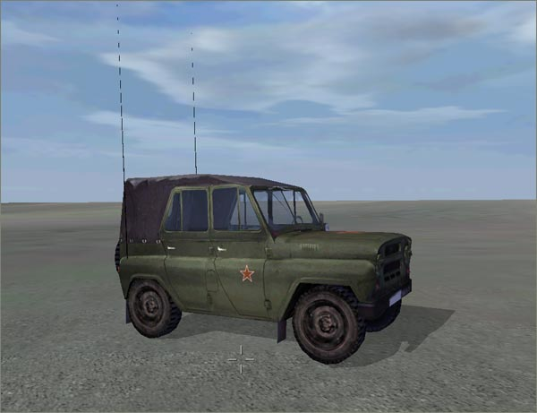
Урал
тип техники - грузовой автомобиль
экипаж - 1 чел
десант - 11 чел
масса - 8,4 т (без груза)
максимальная скорость - 75 км/ч (по асфальтированной дороге)
вооружение - отсутствует
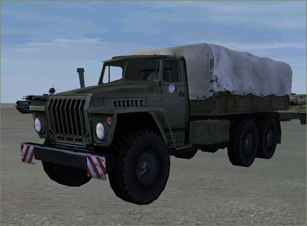
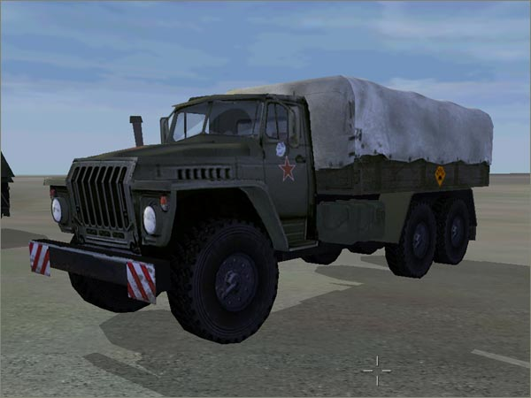
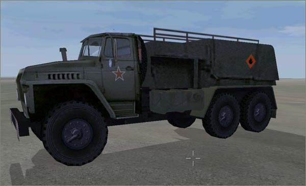
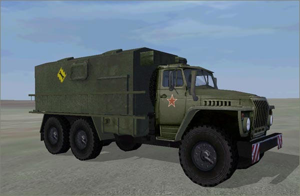
БРДМ-2
тип техники - бронированная разведывательно-дозорная машина
экипаж - 4 чел
масса - 7 т
максимальная скорость - 95 км/ч (по асфальтированной дороге)
вооружение - спаренные пулеметы 14,5 мм и пулемет 7,62 мм
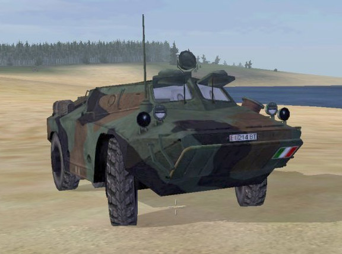
БМП-1
тип техники - боевая машина пехоты
экипаж - 3 чел
десант - 7 чел
масса - 13,2 т
максимальная скорость - 65 км/ч (по асфальтированной дороге)
вооружение - пушка 73 мм, пулемет 7,62 мм, ПТУР
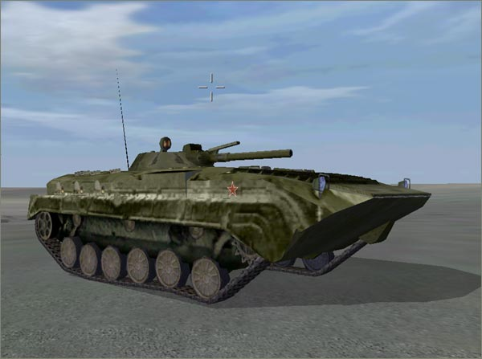
БМП-2
тип техники - боевая машина пехоты
экипаж - 3 чел
десант - 7 чел
масса - 14 т
максимальная скорость - 65 км/ч (по асфальтированной дороге)
вооружение - автоматическая пушка 30 мм, пулемет 7,62 мм, 4 ПТУР, 2 ПЗРК
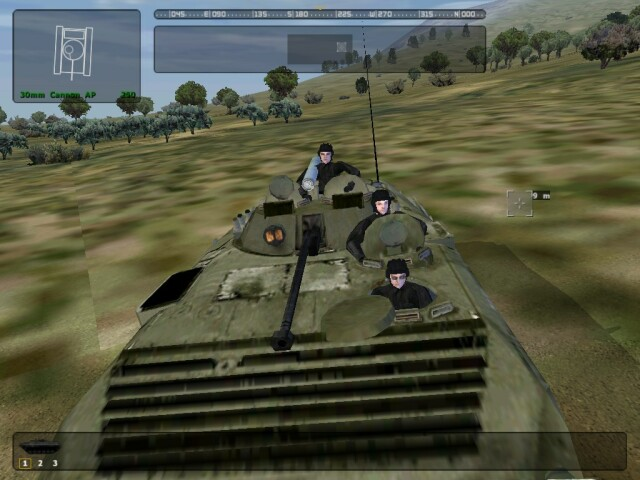
ЗСУ-23 "Шилка"
тип техники - зенитная самоходная установка
экипаж - 4 чел
масса - 19 т
вооружение - счетверенная автоматическая пушка 23 мм
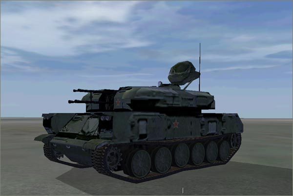
Т-72
тип техники - танк
экипаж - 3 чел
масса - 45 т
максимальная скорость - 80 км/ч (по асфальтированной дороге)
вооружение - пушка 125 мм, пулемет 7,62 мм
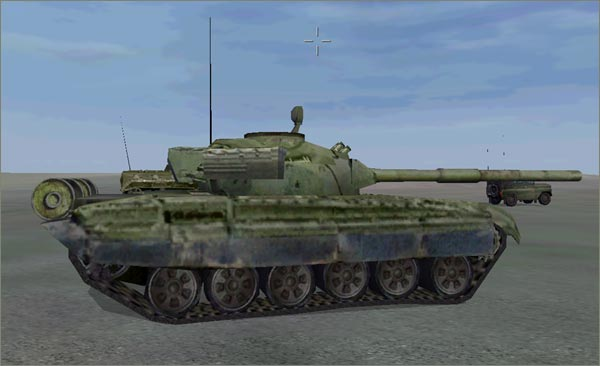
Т-80
тип техники - танк
экипаж - 3 чел
масса - 51 т
максимальная скорость - 70 км/ч (по асфальтированной дороге)
вооружение - пушка 125 мм, пулемет 7,62 мм, АТ11
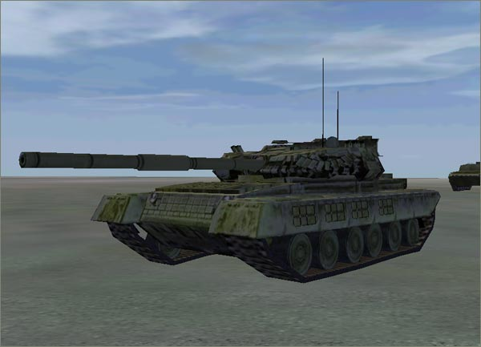
Ми-17
тип техники - вертолет
экипаж - 2 чел
десант - 14 чел
масса - 13 т
максимальная скорость - 360 км/ч
вооружение - ракетные установки С-5
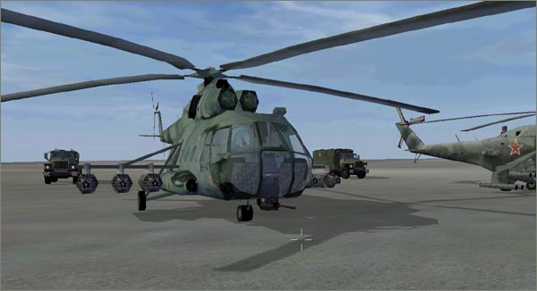
Ми-24
тип техники - вертолет
экипаж - 3 чел
десант - 8 чел
масса - 8,5 т
максимальная скорость - 305 км/ч
вооружение - сдвоенная пушка 30 мм, ПТУР, ракетные установки С-5
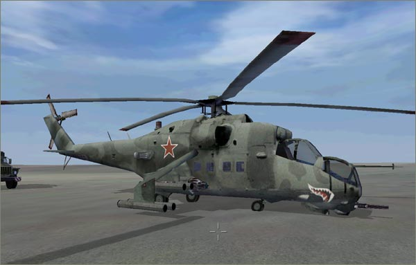
Су-25 "Грач"
тип техники - самолет
экипаж - 1 чел
масса - 17,6 т
максимальная скорость - 950 км/ч
вооружение - сдвоенная автоматическая пушка 30 мм, НУР, УР
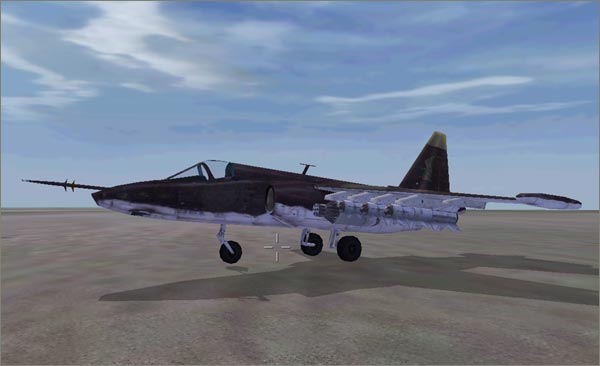
РК-9к72 "Скад"
тип техники - ракетный комплекс
вооружение - ракета 8к14
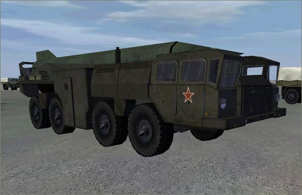
Катер
тип техники - десантный катер
экипаж - 2 чел
десант - 8 чел
вооружение - пулемет 12,7 мм
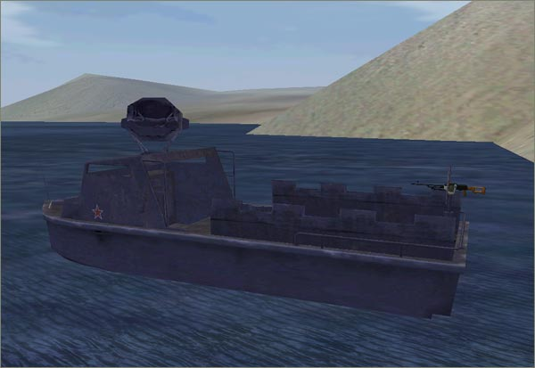
2. НАТО
а) оружие пехоты
M16A2
тип вооружения - штурмовая винтовка
калибр - 5,56х45 мм
масса - 3,4 кг (с пустым магазином)
емкость магазина - 30 патронов
длина - 995 мм
вид огня - одиночный, непрерывный
прицельная дальность стрельбы - 800 м
темп стрельбы - 700 выстр/мин
начальная скорость пули - 990 м/с
XM-177E2 Commando
тип вооружения - штурмовой карабин
калибр - 5,56х45 мм
масса - 2,97 кг
емкость магазина - 30 патронов
длина - 787 мм
вид огня - одиночный, непрерывный
прицельная дальность стрельбы - 700 м
темп стрельбы- 750 выстр/мин
начальная скорость пули -915 м/с
H&K G36
тип вооружения - штурмовая винтовка
калибр - 5,56х45 мм
масса - 3,4 кг (с пустым магазином)
емкость магазина - 30 патронов
длина - 999 мм
вид огня - одиночный, непрерывный
прицельная дальность стрельбы - 800 м
темп стрельбы - 750 выстр/мин
H&K MP5 SD6
тип вооружения - пистолет-пулемет
калибр - 9х19 мм
масса - 2,88 кг (с пустым магазином)
емкость магазина - 30 патронов
длина - 680 мм
вид огня - одиночный, непрерывный
прицельная дальность стрельбы - 700 м
темп стрельбы - 800 выстр/мин
начальная скорость пули - 400 м/с
М21
тип вооружения - снайперская винтовка
калибр - 7,62х51 мм
масса - 5,11 кг
емкость магазина - 20 патронов
длина - 1125 мм
вид огня - одиночный
прицельная дальность стрельбы - 1000 м
темп стрельбы - 30 выстр/мин
начальная скорость пули - 853 м/с
М60
тип вооружения - единый пулемет
калибр - 7,62х51 мм
масса - 10,5 кг
емкость магазина - 100 патронов
длина - 1105 мм
вид огня - непрерывный
прицельная дальность стрельбы - 1200 м
темп стрельбы - 853 выстр/мин
начальная скорость пули - 853 м/с
LAW
тип вооружения - ручной противотанковый гранатомет
калибр - 66 мм
масса - 2,3 кг
длина - 890 мм
прицельная дальность стрельбы - 500 м (200 м эффективная)
скорость ракеты - 145 м/с
M2 "Carl Gustav"
тип вооружения - ручной противотанковый гранатомет
калибр - 84 мм
масса - 14,2 кг
длина - 1130 мм
прицельная дальность стрельбы - 700 м (500 м эффективная)
FIM92A "Stinger"
тип вооружения - переносной зенитно-ракетный комплекс
калибр - 700 мм
масса - 13,5 кг
длина - 1130 мм
прицельная дальность стрельбы - 3800 м
скорость ракеты - 700 м/с
ММ-1
тип вооружения - револьверный гранатомет
калибр - 40 мм
прицельная дальность стрельбы - 300 м
радиус поражения живой силы - 10 м
темп стрельбы - 12-15 выстр/м
М203
тип вооружения - подствольный гранатомет
калибр - 40 мм
масса - 1,36 кг
прицельная дальность стрельбы - 400 м (150 м эффективная)
начальная скорость гранаты - 75 м/с
б) техника
M151 A2 Jeep
тип техники - джип
экипаж - 1 чел
десант - 3 чел
масса - 1,5 т
максимальная скорость - 120 км/ч (по асфальтированной дороге)
вооружение - отсутствует
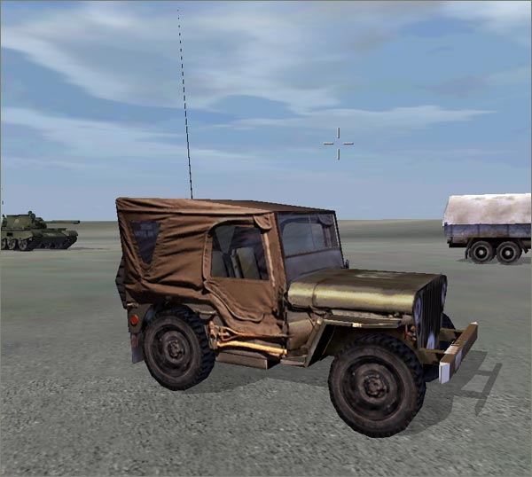
Jeep M2
тип техники - джип
экипаж - 1 чел
десант - 1 чел
масса - 1,5 т
максимальная скорость - 120 км/ч (по асфальтированной дороге)
вооружение - станковый пулемет М2
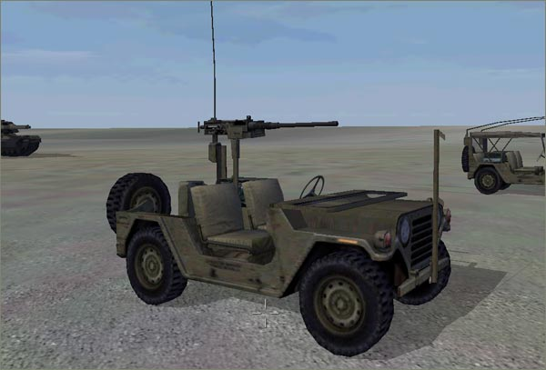
5t Truck
тип техники - грузовой автомобиль
экипаж - 1 чел
десант - 11 чел
масса - 10 т (без груза)
максимальная скорость - 86 км/ч (по асфальтированной дороге)
вооружение - отсутствует
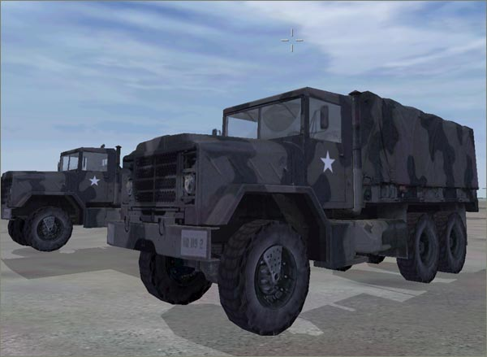
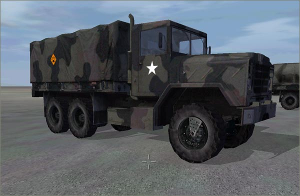
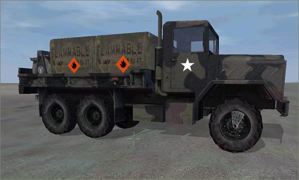
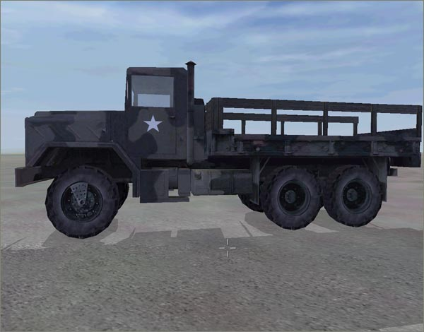
Hummer
тип техники - джип
экипаж - 1 чел
десант - 3 чел
масса - 2,7 т
максимальная скорость - 120 км/ч (по асфальтированной дороге)
вооружение - отсутствует
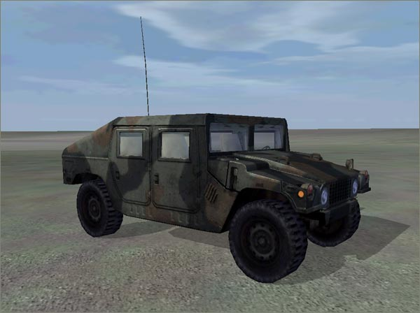
M-113
тип техники - бронетранспортер
экипаж - 3 чел
десант - 8 чел
масса - 10,3 т
максимальная скорость - 64 км/ч (по асфальтированной дороге)
вооружение - пулемет 12,7 мм
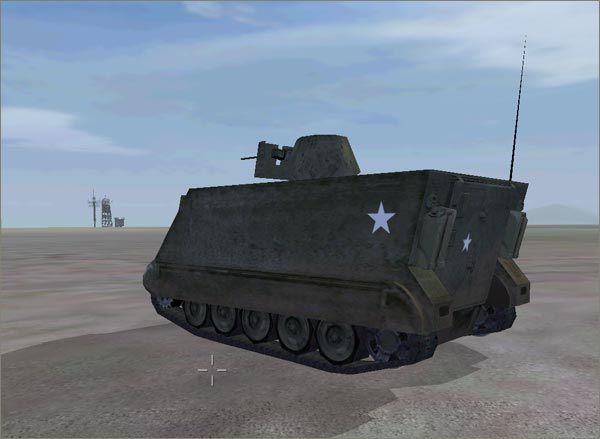
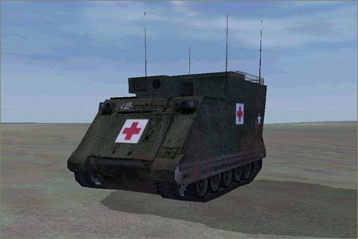
М163
тип техники - зенитная самоходная установка
экипаж - 4 чел
масса - 12 т
максимальная скорость - 65 км/ч (по асфальтированной дороге)
вооружение - шестиствольная пушка 20 мм
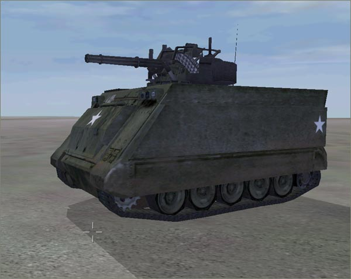
M-60
тип техники - танк
экипаж - 4 чел
масса - 50,8 т
максимальная скорость - 48 км/ч (по асфальтированной дороге)
вооружение - пушка 105 мм, пулемет 7,62 мм
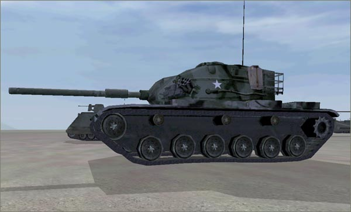
M1A1
тип техники - танк
экипаж - 4 чел
масса - 57,3 т
максимальная скорость - 72 км/ч (по асфальтированной дороге)
вооружение - пушка 105 мм, пулемет 7,62 мм
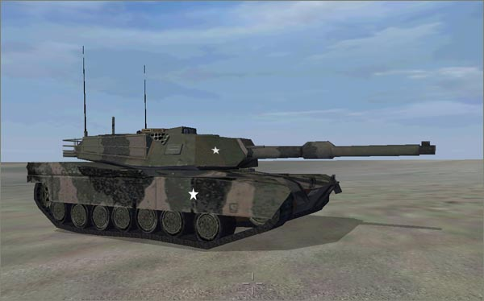
UH-60 Blackhawk
тип техники - вертолет
экипаж - 3 чел
десант - 14 чел
масса - 9,18 т
максимальная скорость - 325 км/ч
вооружение - FFAR
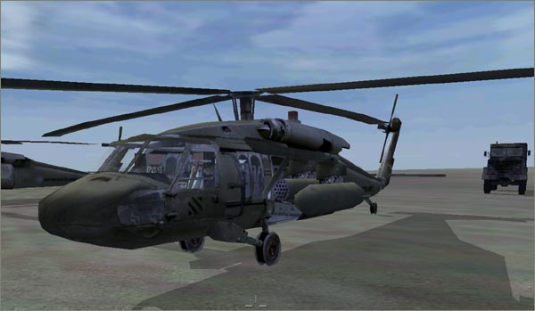
СH-47 Chinook
тип техники - вертолет
экипаж - 3 чел
масса -10,2 т
максимальная скорость - 298 км/ч
вооружение - пулемет 12,7
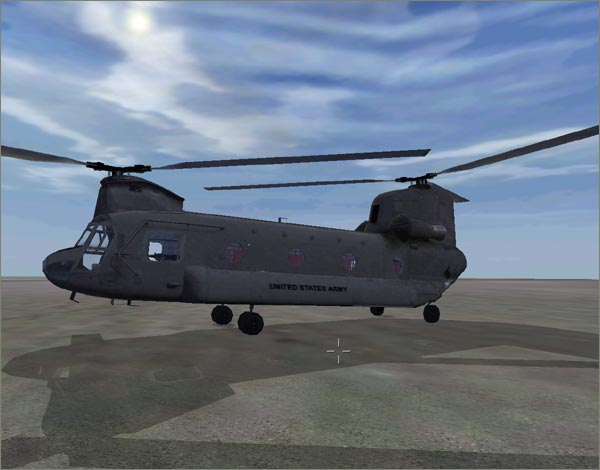
AH-1S Cobra
тип техники - вертолет
экипаж - 2 чел
масса - 4,53 т
максимальная скорость - 285 км/ч
вооружение - трехствольная пушка 30 мм, FFAR, TOW
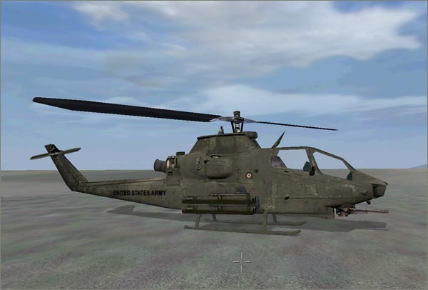
OH-58D Kiowa Warrior
тип техники - вертолет
экипаж - 2 чел
масса - 1,5 т
максимальная скорость - 241 км/ч
вооружение - пулемет 12,7 мм, Hellfire, Hydra
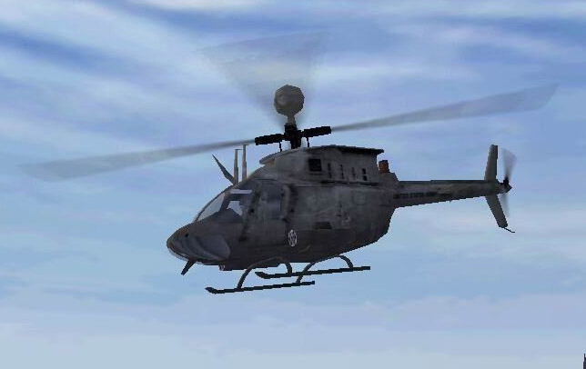
АН-64 Apache
тип техники - вертолет
экипаж - 2 чел
масса - 5,2 т
максимальная скорость - 365 км/ч
вооружение - пушка 30 мм, Hellfire
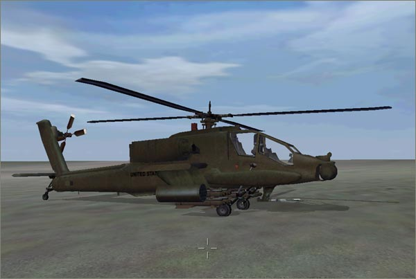
A-10 Thunderbolt
тип техники - самолет
экипаж - 1 чел
масса - 22,6 т
максимальная скорость - 704 км/ч
вооружение - семиствольная автоматическая пушка 30 мм, Мэйверик
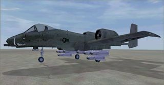
3. Повстанцы
а) оружие пехоты
CZ 584
тип вооружения - охотничье ружье
масса - 3,35 кг
длина - 1130 мм
вид огня - одиночный
прицельная дальность стрельбы - 100 м
AK-47 СZ
тип вооружения - автомат
калибр - 7,62х39 мм
масса - 3,1 кг
емкость магазина - 30 патронов
длина - 845 мм
вид огня - одиночный, непрерывный
прицельная дальность стрельбы - 800 м
темп стрельбы - 750 выстр/мин
начальная скорость пули - 700 м/с
СВД
тип вооружения - снайперская винтовка
калибр - 7,62х54 мм
масса - 4,52 кг (снаряженный)
емкость магазина - 10 патронов
длина - 1225 мм
вид огня - одиночный
прицельная дальность стрельбы - 1300 м
начальная скорость пули - 830 м/с
РПК
тип вооружения - ручной пулемет
калибр - 7,62х53 мм
масса - 5,6 кг
емкость магазина - 40 патронов
длина - 1040 мм
вид огня - непрерывный
прицельная дальность стрельбы - 1000 м
темп стрельбы - 600 выстр/м
начальная скорость пули - 745 м/с
РПГ-7
тип вооружения - ручной противотанковый гранатомет
калибр - 40 мм
масса - 6,3 кг
длина - 950 мм
прицельная дальность стрельбы - 500 м (300 м эффективная)
темп стрельбы - 4-6 выстр/м
скорость гранаты - 120 м/с
ПТУР "Фагот"
тип вооружения - противотанковая радиоуправляемая ракета
калибр - 120 мм
масса - 13 кг
длина - 1200 мм
прицельная дальность стрельбы - 2500 м (500 эффективная)
скорость ракеты - 186 м/с
9К32 "Стрела"
тип вооружения - переносной зенитно-ракетный комплекс
калибр - 72 мм
масса - 15 кг
длина - 1410 мм
прицельная дальность стрельбы - 2200 м (800 эффективная)
скорость ракеты - 430 м/с
ГП-25
тип вооружения - подствольный гранатомет
калибр - 40 мм
масса - 1,5 кг
длина - 323 мм
прицельная дальность стрельбы - 400 м (200 м эффективная)
начальная скорость гранаты - 76 м/с
б) техника
Skoda 105
тип техники - легковой автомобиль
экипаж - 1 чел
десант - 3 чел
вооружение - отсутствует
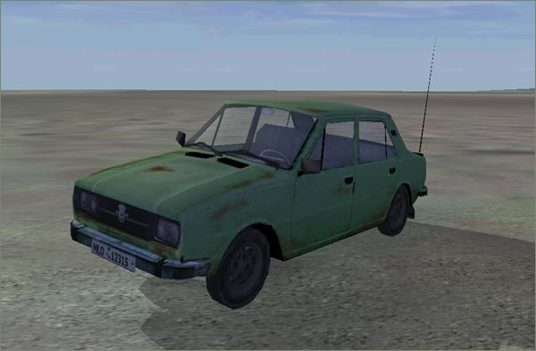
Sportcar
тип техники - легковой автомобиль
экипаж - 1 чел
десант - 3 чел
вооружение - отсутствует
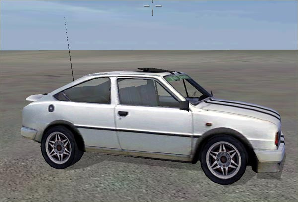
Trabant
тип техники - легковой автомобиль
экипаж - 1 чел
десант - 3 чел
вооружение - отсутствует
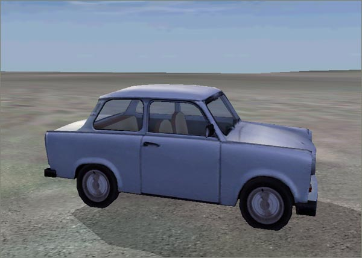
Jeep
тип техники - джип
экипаж - 1 чел
десант - 3 чел
масса - 1,5 т
максимальная скорость - 120 км/ч (по асфальтированной дороге)
вооружение - отсутствует
УАЗ-Г
тип техники - джип
экипаж - 1 чел
десант - 3 чел
масса - 960 кг (без груза)
максимальная скорость - 100 км/ч (по асфальтированной дороге)
вооружение - отсутствует
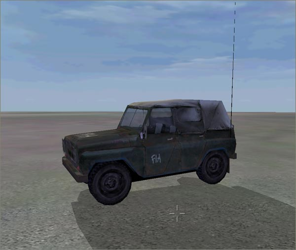
УАЗ
тип техники - джип
экипаж - 1 чел
десант - 3 чел
масса - 960 кг (без груза)
максимальная скорость - 100 км/ч (по асфальтированной дороге)
вооружение - отсутствует
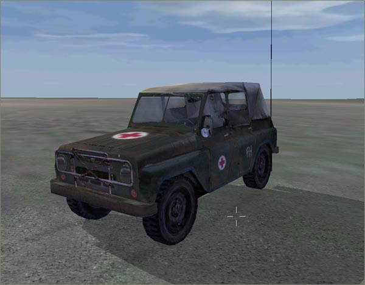
PV3S
тип техники - грузовой автомобиль
экипаж - 1 чел
десант - 11 чел
максимальная скорость - 80 км/ч (по асфальтированной дороге)
вооружение - отсутствует
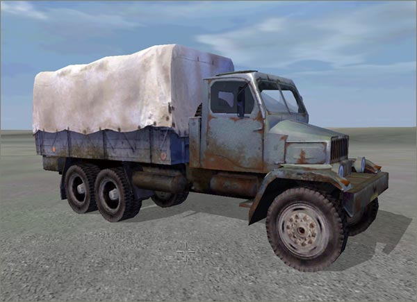
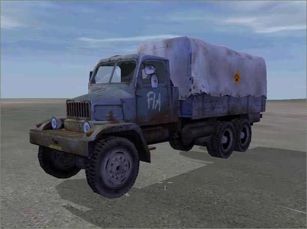
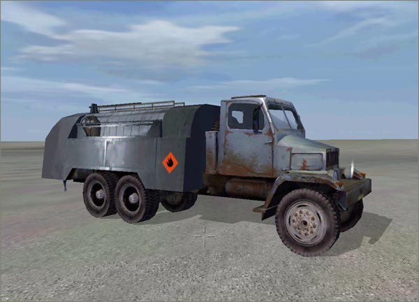
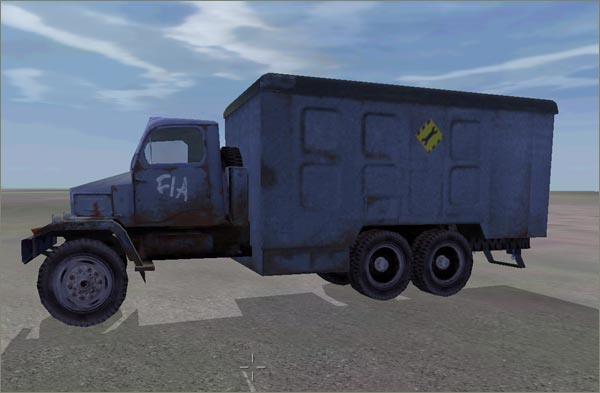
Traktor
тип техники - колесный трактор
экипаж - 1 чел
вооружение - отсутствует
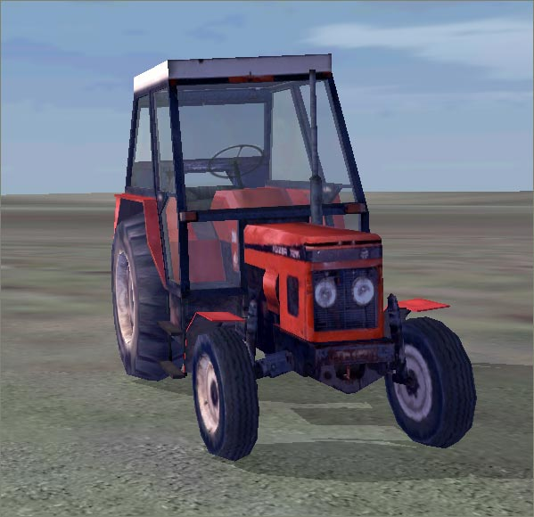
БМП-1
тип техники - боевая машина пехоты
экипаж - 3 чел
десант - 7 чел
масса - 13,2 т
максимальная скорость - 65 км/ч (по асфальтированной дороге)
вооружение - пушка 73 мм, пулемет 7,62 мм, ПТУР
Т-55
тип техники - танк
экипаж - 4 чел
масса - 36 т
максимальная скорость - 50 км/ч (по асфальтированной дороге)
вооружение - пушка 100 мм, пулемет 12,7 мм, пулемет 7,62 мм
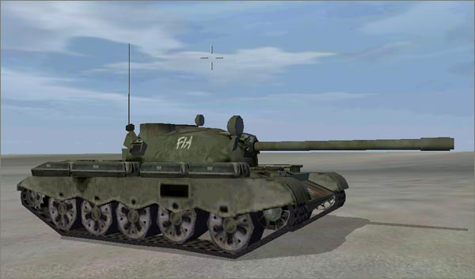
Cessna 172
тип техники - самолет
экипаж - 1 чел
десант - 3 чел
масса - 821 кг
максимальная скорость - 181 км/ч
вооружение - отсутствует
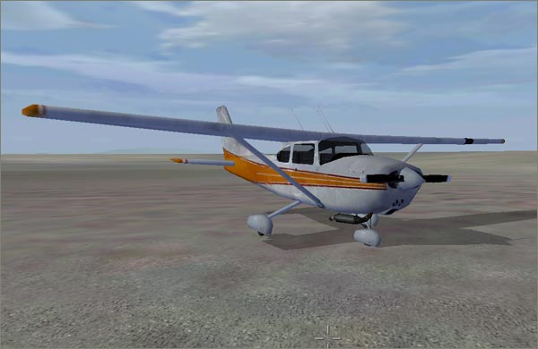
II. Прохождение кампании
Перед тем, как перейти к непосредственному прохождению миссий, стоит заметить, что в отличие от OF:CWC Red Hammer все время требует от игрока активных действий, начиная с самого первого задания. Так что даже не пытайтесь схорониться за спинами своих товарищей, в противном случае вам придется снова и снова начинать миссию заново.
Mission 1. Красный молот
Задания на миссию:
- пробейтесь к маяку и захватите его;
- удержите ваш район в случае любого сопротивления;
- отразите контрнаступление и удержите топливную станцию. Затем забирайтесь в грузовик и выполняйте дальнейшие боевые задачи согласно плану;
- как только обеспечите безопасность вашего сектора, продвигайтесь вглубь острова и присоединитесь к отряду Бориса, сражающегося за Тайрон.
Действия:
1. Вместе со своими боевыми товарищами бегите к маяку. Как только раздадутся первые выстрелы в вашу сторону, сразу же падайте на землю и продолжайте двигаться ползком. На ваш отряд в контрнаступление пойдет четверо повстанцев. Постарайтесь снять этих храбрецов издали, так как на таком расстоянии их ружья становятся абсолютно бесполезными против вашего плотного автоматного огня. Дальнейшую зачистку доверьте остальным солдатам, они как раз закончат свою работу к тому времени, когда вы доползете до маяка. Совместными усилиями отбейте контратаку противника, расположившегося в квадрате Ei24.
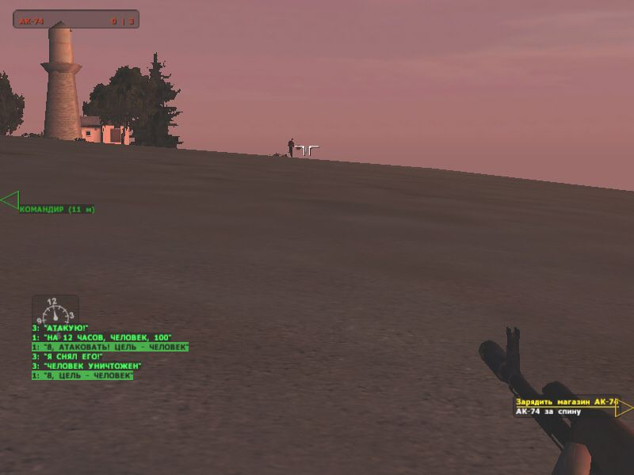
2. Перед тем как сесть в Урал, пополните свою амуницию рожками к АК-74. Как только грузовик остановится недалеко от заправки, сразу же выпрыгивайте из кузова и бегите со своими товарищами в сторону желтого здания. Справа от него расположены заросли кустарника. Как только начнется заварушка, сразу же падайте на землю и закидывайте кусты ручными гранатами. После этого добейте уцелевших вражеских солдат плотным автоматным огнем. Теперь возьмите на мушку участок слева от желтого здания, там появится двое повстанцев.
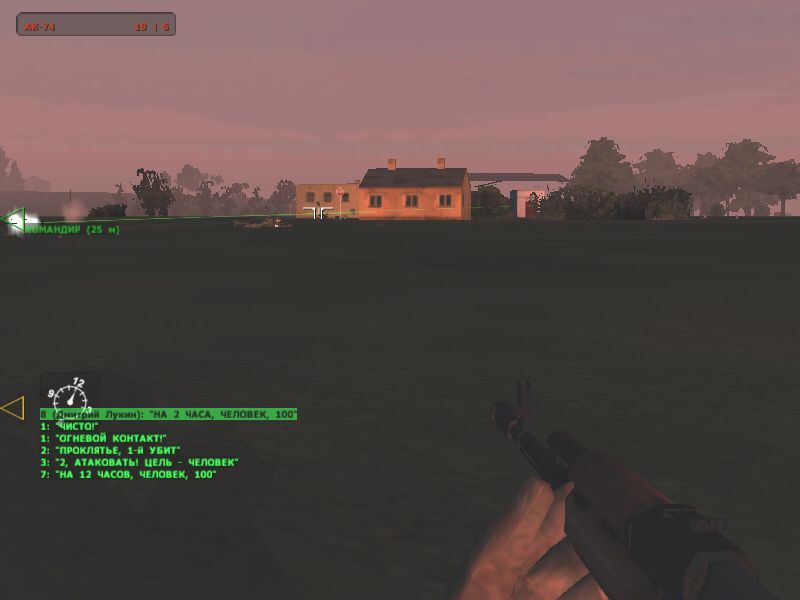
3. Вам необходимо любой ценой удержать только что захваченную топливную станцию. Спрячьтесь за березками в квадрате Ed21. Как только противник приблизится к вам до такой степени, что по нему можно будет попасть даже с закрытыми глазами, открывайте огонь на поражение.
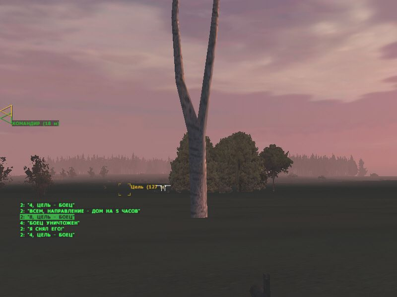
4. Возвращайтесь к грузовику и отправляйтесь в квадрат, откуда поступило последнее сообщение от отряда Бориса. В домах засели повстанцы с ружьями. Расстреляйте противника на расстоянии в 50-70 метров. Хиленькие CZ 585 на столь большой для них дистанции не причинят вам даже малейшего вреда. Последний аккорд зачистки доверьте остальным солдатам отделения.
Mission 2. Оккупация
Задания на миссию:
- найдите узел связи в Мо и ликвидируйте повстанцев;
- прервите сход боевиков в Сан-Филиппе;
- захватите и удержите лагерь боевиков;
- возьмите под контроль аэродром;
- найдите укрывшихся в лесу боевиков.
Действия:
1. Следуйте за вашими боевыми товарищами. Захватить радиоузел не составит большого труда: придерживайтесь формации и издали снимайте немногочисленных повстанцев. Как только вы выполните первое задание, в ваше распоряжение передадут несколько солдат (3-5 человек). Подберите с трупа убитого боевика РПГ-7 и три заряда к нему.
2. Ни в коем случае не садитесь в трофейный грузовик, так как по пути к точке назначения вы испытаете на своей шкуре, что такое грамотно устроенная засада. Ставлю сто против одного, что весь отряд так и останется сидеть в кузове PV3S с простреленными головами. Если вы хотите свести ваши потери к минимуму, то придерживайтесь следующей тактики передвижения: вы в роли разведчика ползете впереди отряда, а ваши питомцы следуют за вами на расстоянии в 50-60 метров. Таким образом, в случае обнаружения противника вы сможете спокойно приказать вашим подопечным уничтожить встретившиеся вам по пути силы противника.
Первая засада будет организована в квадрате De24. Не высовывайтесь и ждите до тех пор, пока враг не будет уничтожен штатным пулеметчиком вашего отряда. Все время держитесь зеленки справа от дороги. Всю дальнейшую дистанцию до Сан-Филиппе вам предстоит вспахать своим брюхом. Через каждые сто метров пути включайте бинокль и осматривайте близлежащую территорию. На опушке находящегося слева от вас леса данным способом вы обнаружите несколько конвоев. В таких случаях от вас требуется отдать приказ на уничтожение противника расположившимся чуть позади вас солдатам и продолжать ползти дальше.
Примерно за 100 метров до цели спрячьтесь в зарослях кустарника и из гранатомета подорвите белую легковую машину вместе со стоящим рядом с ней гранатометчиком повстанцев. Переключитесь на автомат. На взрыв сбегутся все затаившиеся враги. Вместе со своими ребятами ликвидируйте мечущихся из стороны в сторону солдат возле фонтана.
3. Дождитесь подкрепления, сгруппируйте все имеющиеся у вас силы и отправляйтесь в сторону тренировочного лагеря. Опять же продолжайте действовать по старому принципу: вы впереди, а остальные бойцы чуть позади. Ползите от кустарника к кустарнику. Как только до забора останется 50-100 метров, начинайте аккуратно снимать патрули противника так, чтобы враг не смог засечь вашего точного местоположения.
А теперь воспользуйтесь небольшим глюком игры. Возле зданий всегда можно пролезть через забор. Расположите ваших питомцев по периметру лагеря, а сами ползите дальше. С противоположной от охраняемого входа стороны через дырку между двумя частями деревянного забора можно пролезть в самое сердце лагеря. Переключитесь на режим ведения автоматического огня и перебейте салаг.
4. Отправьте все имеющиеся в вашем распоряжении силы в квадрат Dj16, ибо именно там затаились боевики-недобитки. Разобравшись с ними, отправляйтесь в сторону аэродрома. Последние 500 метров до цели преодолейте по-пластунски. Примерно на расстоянии 200 метров до цели двумя точными выстрелами из гранатомета уничтожьте танк Т-55. Теперь отбейте контратаку противника и проведите зачистку опустевшего аэродрома.
Mission 3. Нянька
Задания на миссию:
- убедитесь, что Ангелина прибудет в Монтиньяк вовремя и в полной безопасности;
- машина была выведена из строя. Найдите альтернативный транспорт до Монтиньяка.
Действия:
1. Садитесь в Урал на место водителя, заводите мотор и включайте фары. Во время пути вы должны не отстать от грузовика командира, иначе миссия будет провалена.
Разумеется, по закону жанра вы должны в одиночку доставить Ангелину до места назначения. Спрячьтесь в кустах справа от дома и уничтожьте троих солдат. Вернитесь на исходную позицию и перезарядите свой автомат. Еще раз выгляньте из-за кустов и скосите новую порцию вражеских пехотинцев. Вернитесь назад, высуньтесь из-за левой части здания и прикончите еще двоих повстанцев.
Подойдите к кузову грузовика, возьмите AT4 и заряд к нему. Вернитесь к кустам и уничтожьте танк Т-55. Вернитесь к Уралу и пополните свои боеприпасы рожками к АК-74 и ручными гранатами. Ложитесь на землю и приготовьтесь к встрече с вражеским гранатометчиком (он зайдет слева от дома).
Ползком обогните дом с правой стороны и зайдите внутрь через открытую дверь. Вам необходимо посетить комнату слева.
2. Теперь у вас есть ключи от грузовика, осталось найти сам грузовик. Он стоит чуть впереди вас возле соседнего дома. Будьте аккуратны, так как слева от PV3S затаился вражеский пулеметчик. Закидайте его гранатами и займите место водителя. Подъедьте к первоначальной локации и подождите пару секунд, пока Ангелина будет пересаживаться на место пассажира в кабине.
Выезжайте на дорогу и набирайте максимально возможную скорость, так как противник организует на вас засаду. Но будьте аккуратны, ибо встречное движение еще никто не отменял. Конечный пункт - вертолетная площадка.
Mission 4. Repulsion/Контратака
Задания на миссию:
- защитите деревню от вражеских сил;
- перекройте отступы экспедиционному корпусу;
- доложите на базу в Леви.
Действия:
Поздравляю вас с присвоением звания сержанта, но война на этом отнюдь не заканчивается. Вам предстоит уничтожить два вертолета СH-47 Chinook, перебить десант натовцев и отразить атаку повстанцев. С амуницией, которая установлена у членов вашего отряда по умолчанию, вам победы не видать. Поэтому смело залезайте в меню брифинга и меняйте свой простой АК-74 на точно такой же, но с ГП-25. Вместо четырех ручных гранат возьмите две гранаты для подствольного гранатомета. Максима Бычковского и Дмитрия Спаснева вооружите стрелами и ракетами к ним, а Геннадию Пахомову дайте СВД. Вот теперь можно отправлять на дело.
1. Быстро заскочите в одну из двух палаток и возьмите две радиоуправляемые взрывчатки (пластид в русской версии игры). Дайте задание вашим бойцам уничтожить первый вертолет. Теперь прикажите вашим питомцам взобраться на холм примерно на 50-70 метров, ибо оттуда вашему снайперу будет намного удобнее уничтожать десантников, которых высадит второй вертолет.
2. Тем временем что есть мочи мчитесь к дороге и возле дерева (чем дальше, тем лучше) устанавливайте друг за другом на расстоянии в 10 метров две радиоуправляемые взрывчатки. Забирайтесь на холм. Пропустите первый грузовик и ждите появление второго. Взрывайте ваши гостинцы повстанцам к чертовой бабушке.
Помогите вашим солдатам разобраться с десантниками выстрелами из подствольника. Пущенная граната в самую гущу солдат - самое эффективная средство по борьбе со скучившимися врагами. Барражирующий в небе вертолет противника спокойно уничтожается из автомата, достаточно двух рожков (стреляйте по кабине с пилотами).
3. Через пару минут на замену вашему отряду прибудет грузовик с солдатами, а вам прикажут отправиться с докладом на базу. Садитесь в УАЗ или в только что прибывший Урал и езжайте в сторону появившейся локации.
Mission 5. Штурм побережья
Задания на миссию:
- уничтожьте все вражеские силы на побережье;
- уничтожьте системы ПВО в Шапуа;
- возвращайтесь на побережье.
Действия:
Зайдите в меню брифинга и поменяйте выставленный по умолчанию АК-74 на СВД, а второй слот пусть займет РПГ-7. Вместо ручных гранат возьмите две дополнительных обоймы для СВД и два заряда для гранатомета.
1. Вы можете строго придерживаться плана миссии, но я вам предлагаю не бежать на далекую гору, а атаковать противника в лоб. Высаживайтесь на берег и, не включая оптику, уничтожайте живую силу врага в ближнем бою. Прикажите вашим солдатам лечь на землю и проползти вперед метров 20-25. Отбейте первую волну контратаки натовцев, при этом будьте особо внимательны с гранатометчиком янки, иначе вы лишитесь столь необходимой поддержки со стороны экипажей БМП. Разобравшись с гранатометчиком, займитесь остальными врагами. Продвиньтесь еще на 20-25 метров и точно таким же способом отбейте вторую волну контратаки. Оставайтесь на той же позиции и приготовьтесь к сражению с третьей (последней) волной, при этом повышенное внимание уделите вражескому снайперу. После окончания схватки возьмите у него М21, так как к СВД у вас к тому времени должно остаться не очень много патронов.
2. С остатками своего отряда отправляйтесь к месту, где расположился Вулкан. На подступах к городу уничтожьте экипаж Jeep M2. С расстояния в 300-400 метров с возвышенности ликвидируйте всю живую силу противника в Шапуа. Ползком доберитесь до Вулкана с тыла и точным выстрелом из гранатомета взорвите его, предварительно убив последних двух охранников.
3. Что есть мочи неситесь в сторону побережья, не обращая внимания на дальний неточный огонь противника.
Mission 6. Под огнем
Задания на миссию:
- уничтожьте два Вулкана;
- уничтожьте вторую пару Вулканов;
- доложить на базу в Хаудане.
Действия:
Во время брифинга поменяйте выставленный по умолчанию АК-74 на СВД, а второй слот пусть займет РПГ-7. Вместо ручных гранат возьмите четыре дополнительных обоймы для СВД и один заряд для гранатомета.
1. Езжайте по дороге в сторону первой пары Вулканов на максимально возможной скорости. За 900 метров до цели сверните с шоссе и продолжайте свой путь по буеракам. За 700 метров до цели вылезайте из грузовика и всем отрядом продолжайте двигаться дальше исключительно ползком. Через несколько мгновений вы наткнетесь на форт-пост противника. Вместе со штатным снайпером отряда перебейте ничего не подозревающих натовцев. Продолжайте ползти дальше. Заберитесь на возвышенность в квадрате Gf69. Прикажите вашему гранатометчику уничтожить первый Вулкан, а сами займитесь вторым. В палатках возьмите две взрывчатки с дистанционным управлением.
2. Возвращайтесь обратно к грузовику и езжайте в сторону второй пары Вулканов. Высадитесь примерно в 500 метрах от цели. Оставшееся расстояние придется преодолеть ползком. Заберитесь на вершину холма в квадрате Ge69 и совместными усилиями перебейте охрану базы. Первым делом выносите пулеметчиков, а уже всех остальных пехотинцев. Американцы даже не сообразят, кто их так методично отстреливает. Теперь Вулканы можно брать голыми руками.
3. Садитесь в грузовик и езжайте в сторону точки эвакуации.
Mission 7. Собраться с силами
Задания на миссию:
- отправляйтесь в Хаудан, откуда свяжитесь с нашей базой в Лолисе;
- найдите возможность починить Т-72;
- возвращайтесь в Хаудан и почините танк;
- следуйте на север, уничтожая по пути любую американскую технику;
- защитите машины техподдержки. Мы не можем терять эти ресурсы.
Действия:
1. Отойдите метров на 20 справа от дороги и ползите к точке сбора. За 550-530 метров до цели в квадрате Fh56 вальяжно прохаживаются двое натовцев. Половина рожка им хватит с лихвой. Продолжайте ползти в том же направлении, прячась за немногочисленными кустами. Обойдите справа белый и коричневый дом и выйдите к подбитой Шилке.
2. Подберите с трупов танкистов несколько рожков к АК-74. Отправляйтесь к базе снабжения. Последние 400 метров до цели преодолейте ползком. Спрячьтесь в кустах в квадрате Fc53 и перебейте отделение противника, бдительно охраняющее стоянку. Непонятно почему, но один советский солдат спрятался в доме возле грузовика, на некоторое время он станет третьим бойцом в вашем отряде.
3. Все вместе садитесь в машину технической помощи и езжайте на прежнюю локацию. Остановитесь вплотную с Т-72 и дайте задание танкисту пересесть в подбитый танк. Теперь прикажите ему починить тэшку (клавиша 6, затем 1 и 3). Сами же садитесь на место стрелка.
4. Прикажите вашему подопечному ехать по направлению в Даурдан. По пути вам предстоит уничтожить три вражеских М60. Так как ваш танк намного мобильнее и сильнее натовских телег, вы довольно легко справитесь с этим заданием. Ни на секунду не стойте на одном месте, постоянно крутитесь вокруг цели как заводной, иначе неминуемо последует поражение. На подходе к населенному пункту уничтожьте гранатометчика противника, остальных пехотинцев цинично намотайте на гусеницы.
5. На всех парах неситесь на защиту грузовиков. Отбейте атаку двух неповоротливых М60, а солдат скосите при помощи пулемета.
Mission 8. Спасение танка
Задания на миссию:
- спасти экипаж танка;
- отбить захваченные танки около топливного склада;
- добраться до места эвакуации;
- второстепенная задача. Уничтожить американские танки в Шапуа и разбить их войска.
Действия:
1. Прикажите водителю Урала занять место пассажира, а сами садитесь за баранку. Отдайте приказ танкисту напрямую двигаться в сторону Сан-Мари. Сами же на максимально возможной скорости езжайте к цели по асфальтовой дороге. В квадрате Eg72 противник попытается вас уничтожить. Обогните Шапуа слева (туда вы еще вернетесь и поговорите с этими гадами по-мужски). Сейчас ваша главная задача - напуганные до смерти танкисты.
2. Посадите двоих танкистов в Т-72, а остальных в PV3S. Прикажите Т-72 атаковать топливный склад. Как только ребята справятся со своим заданием, прикажите водителю PV3S доехать до склада. Пусть все остальные танкисты займут свои места в двух только что освобожденных танках. Сами же отремонтируйте и пополните боеприпасы всех трех тэшек.
3. Атакуйте американцев, засевших в Шапуа. Сначала издали выведите из строя М60, а потом передавите абсолютно беспомощную пехоту.
4. Доберитесь до точки эвакуации.
Mission 9. Прикрыть тылы
Задания на миссию:
- уничтожьте танки, преследующие нас от Ларивьеры;
- убедитесь, что ваши люди погрузились на катера. Их жизни в ваших руках;
- уничтожьте вражеский вертолет и американские катера. Наши суда должны покинуть этот район.
Действия:
1. Расположите ваши танки на возвышенности в квадрате Ca70. С этих позиций вам будет намного удобнее дать отпор вражеской бронетехнике. Сами же постарайтесь не стоять на одном месте, так как это значительно уменьшит ваши шансы схлопотать в башню бронебойный снаряд с надписью "made in USA".
2. Разобравшись с танками противника, отдайте приказ двигаться в сторону порта. По пути вам предстоит защитить колонну отступающих грузовиков от атаки двух M60.
3. По радио к вам поступит приказ прикрыть отступление ваших десантных катеров. Остановитесь возле Шилки и покиньте свой танк. Займите в Шилке место стрелка и уничтожьте вражеский вертолет. Тем временем ваши подопечные справятся с катерами противника.
Mission 10. Высадка
Задания на миссию:
- проникнуть на авиабазу и найти какой-либо транспорт. Используйте для этого все доступные силы;
- уничтожьте Вулканы. Вы не можете взлететь без угрозы быть сбитым, пока они действуют;
- уничтожьте американские воздушные суда на аэродроме к северо-востоку.
Действия:
1. Прикажите вашему подопечному лечь на землю и сами поступите точно также. Ползите к месту назначения. Опьяненные победой вражеские патрули не смогут засечь ночью двух озлобленных советских пехотинцев. Трое натовских солдат греется возле костра в квадрате Ff21. Возьмите с трупа гранатомет и два заряда к нему. Также не помешает позаимствовать прибор ночного видения и заменить ваш АК-74 на M16A2. Возле ящика запаситесь патронами. Продолжайте ползти к намеченной цели дальше.
2. Прикажите вашему напарнику опять лечь на землю. Ползите по направлению к Вулканам. В квадрате Fh19 спрячьтесь за деревьями и метким выстрелом из гранатомета уничтожьте первый Вулкан. Перебейте всех солдат, которые по тревоге прибегут к подбитой зенитной самоходной установке. Продолжайте ползти дальше. Убейте еще двоих охранников, стоящих возле белого здания недалеко от Ми-17. Добравшись до конца забора, подбейте второй Вулкан. Займитесь оставшимися в живых после взрыва солдатами врага.
3. Садитесь в Ми-17 на место пилота, а напарник пусть займет место стрелка. Включите фары, заведите мотор, наберите обороты и поднимитесь в небо. Отправляйтесь в сторону вражеской вертолетной базы и сравняйте ее с землей.
Mission 11. Выброска
Задания на миссию:
- украдите грузовик, заправьте вертолет и взлетайте;
- доберитесь до машины техпомощи и почините вертолет;
- подберите отделение Николая;
- вывезите на вертолете с этого острова оставшихся бойцов.
Действия:
1. Оденьте прибор ночного видения. Вместе с напарником ложитесь на землю и ползите в сторону заправки. В самом начале пути вам встретится четверо пилотов врага. Примерно за 900 метров до цели возле кустов затаилось два натовских патруля. Заберитесь на вершину холма, воспользовавшись дыркой в заборе. Во время спуска с холма, снимите еще двоих солдат. Будьте особо аккуратны, когда проникните на базу, так как там обосновались новые силы противника. Подползите к гадам на максимально близкое расстояние и закидайте их ручными гранатами. У одного из убитых возьмите H&K G36, ибо к этому времени патроны к АК-74 у вас будут на исходе. Пошлите пулю в голову пулеметчика, спрятавшегося возле самого дальнего здания слева от дороги.
Садитесь в грузовик-заправщик и отправляйтесь с напарником в сторону вертолета. Пусть ваш товарищ займет в Ми-17 место пилота, а вы тем временем вплотную подъедьте к левому борту "стрекозы". Теперь отдайте приказ о начале заправки (клавиша 4, затем 1).
2. Пусть ваш боевой товарищ пересядет место стрелка, а вы займите место пилота. Летите в сторону машины технической помощи.
3. Ваша цель - колонна натовской бронетехники: Вулкан, Абрамс и два М60. На все про все у вас 150 ракет. С первого же захода разнесите на куски Вулкан. После этого снижайтесь до высоты 50 метров и придерживайтесь скорости 60 км/ч не спеша разберитесь с абсолютно беззащитными танками.
4. Летите к месту дислокации отделения Николая. Будьте особо внимательны при посадке, лучше не долететь пару десятков метров, чем раздавить нескольких солдат. Сажайте бойцов во чрево вашей пташки. Взлетайте и приготовьтесь к уничтожению еще одного конвоя. После успешного выполнения задания, летите в сторону точки эвакуации.
Mission 12. Assassination/Ликвидация
Задания на миссию:
- ликвидировать офицера из Сент-Луиса;
- ликвидировать офицера в Латрините;
- ликвидировать офицера из Даурдана.
Действия:
Поздравляю вас с зачислением в части специального назначения. Перед началом миссии в меню брифинга полностью поменяйтесь вооружением с Максимом Бычковским. Таким образом у вас будет АКС-74У и три взрывчатки с дистанционным управлением, а у вашего напарника СВД. Доверять подчиненным установку пластида на дороге - это непозволительная роскошь.
1. Бегите к участку дороги в квадрате Fg33. Спрячьтесь в кустах в квадрате Fj32 и прикажите вашему снайперу снять пятерых солдат. Схоронитесь в кустах в квадрате Fj33 и перебейте еще один отряд натовцев. Бегите к дороге и устанавливайте друг за другом все три взрывчатки, не забудьте при этом выбрать себе ориентир. Спрячьтесь в кустах и в нужный момент подорвите вражеский М113.
2. Теперь вы можете спокойно поднять с трупов понравившееся вам оружие. Лично я вам советую взять H&K G36, гранатомет и пару зарядов к нему. Направляйтесь в сторону Латринит. В квадрате Fg34 убейте пулеметчика и автоматчика противника. Продолжайте ползти дальше. На расстоянии в 250-300 метров рот цели снимите всю живую силу противника в городке. Водитель М113 начнет паниковать и кружить вокруг зданий. Подбейте М113 из гранатомета.
3. Последний офицер спрятался в самом дальнем здании справа от вас (ориентиры - мешки возле стен и телевизор внутри дома). Доберитесь до точки эвакуации на джипе или же на своих двоих. Запрыгивайте с напарником на место пассажиров в вертолете и покидайте это проклятое место.
Mission 13. Alamo/Аламо
Задания на миссию:
- отразите первую волну наступления;
- отразите вторую волну наступления;
- отразите третью волну наступления;
- отразите четвертую волну наступления.
Действия:
Во время брифинга поменяйте выставленный по умолчанию АК-74 на СВД, а второй слот пусть займет гранатомет. Возьмите три взрывчатки с дистанционным управлением. Не забудьте про бинокль. Разоружите двух штатных гранатометчиков отряда Сергея Чернова и Владимира Спаснева. Оставьте им лишь выставленные по умолчанию автоматы, ибо эти мазилы, в отличие от вас, не обладают богатым опытом ведения боевых действий и вряд ли смогут подбить вражеский танк с первого выстрела.
1. Времени у вас очень много, поэтому всю работу делайте не спеша, шаг за шагом. Посадите двух бойцов с АКС-74У в БМП (первому прикажите занять место водителя, а второму - стрелка), парни должны остановиться возле знака "Главная дорога". Пусть третий спецназовец обживет место стрелка в подбитой Шилке. Обезоруженные гранатометчики должны залечь на холме, слева от дороги. Сами же перенесите все боеприпасы к кустам в квадрате Dj47. Заложите первую порцию взрывчатки с дистанционным управлением по всему квадрату Ea47, а по бокам расставьте противотанковые заграждения. Возвращайтесь к ящикам с боеприпасами и возьмите с собой мины и взрывчатку. Опять возвращайтесь в квадрат Ea47 и засевайте поле смертоносным тротилом. Повторите такие действия до тех пор, пока в ящиках не останется больше мин и пластида. Зарядите свой гранатомет и займите удобную позицию, чтобы квадрат Ea47 лежал перед вами как на ладони. Передайте на базу о вашей готовности (клавиша 0, затем 1) отразить вражеское наступление.
Понеслась…
Первую волну атаки противника составит одинокий Абрамс. Можете расслабиться, так как для него хватит всего двух мин, которые вы удачно расставили прямо на пути его следования.
2. Во вторую волну вошли три танка М60. Они опять же пройдут по квадрату Ea47. Активируйте взрывчатку при помощи пульта дистанционного управления - второй волны как и не бывало.
3. Пусть Шилка займется вражеским вертолетом. Ни один десантник противника не должен высадиться на землю. При помощи БМП и Шилки отразите атаку двух М113.
4. Вам осталось сдержать последнюю волну. Запустите вражеские М60 в обороняемый город. Там они станут абсолютно неповоротливы и вы сможете легко разобраться с ними. Выстрел - забег до кустов с боеприпасами к гранатомету, перезарядка и еще один выстрел. Боеприпасов должно хватить на все танки. Как только поступит приказ об эвакуации, бегите с остатками вашего отряда к только что приземлившемуся вертолету.
Mission 14. Under Orders/Следуя приказам
Задания на миссию:
- вторая задача: американцы недавно заняли брошенный госпиталь. Выбейте их оттуда;
- следуйте к Мо и организуйте засаду.
Действия:
Во время брифинга поменяйтесь с Геннадием Пахомовым имеющимся в наличии оружием: отдайте ему три взрывчатки с дистанционным управлением, а взамен возьмите РПГ-7 и заряды к нему.
1. По лесу вы можете передвигаться бегом. Единственное, что доставит вам неприятности на этом участке карты, так это вражеские солдаты в квадрате Dj33. Возьмите с тела убитого снайпера М21 и прикажите вашим ребятам заменить свои АКС-74У на более дальнобойное трофейное оружие. Один из них пусть обязательно возьмет М72 и три заряда к нему. В квадрате Ea30 прогуливается вражеский отряд, тут все зависит только от вашего снайперского искусства.
Пусть ваш гранатометчик в первую очередь подобьет грузовик с солдатами в кузове, а потом прикажите ему разобраться с М113. Сами издали снимите всех янок, засевших в Байроне. В качестве финального аккорда гранатометчик вашего отряда должен вывести из строя еще один М113, который укрывается за стенами самого крайнего дома в этом населенном пункте.
Все дружно бегите в сторону госпиталя, прячась от вездесущего вертолета в лесах и многочисленных зарослях кустарника. В квадрате Dc34 разберитесь с отделением натовцев. Выходите из леса. Первым делом из гранатомета подбейте М113 с красным крестом. Метким снайперским огнем похороните немногочисленную охрану госпиталя. Спускайтесь вниз, в грузовике будет лежать несколько обойм к М21.
2. Садитесь в джип за баранку, а трое ваших подчиненных пусть займут места пассажиров. По пути к цели вы можете передавить солдат, проходящих строевую подготовку в квадрате Dc28. Дальнейшую сцену я оставлю без комментариев.
Mission 15. Dark Path/Темный путь
Задания на миссию:
- уничтожьте первого офицера;
- уничтожьте второго офицера НАТО;
- следуйте к ферме, найдите и нейтрализуйте лидера боевиков. Без них американские планы будут нарушены, и мы получим возможность провести контратаку.
Действия:
1. Очень темно, не правда ли? Оденьте прибор ночного видения. Пока вы в лесу, можно бежать в сторону Граветта во весь рост. Последние 250 метров вам придется преодолеть по-пластунски. Примерно за 130 метров до цели убейте двоих солдат. У одного из них возьмите штурмовую винтовку М16А2, так как шума от нее примерно столько же, сколько и от АКС-74У, а прицельная дальность в два раза больше. Ползите к кустам в квадрате Db39 и оттуда перебейте всех натовцев, стоящих в центре улицы.
2. Садитесь в Jeep M2 на место водителя и включайте ручной режим ведения огня. Отправляйтесь в сторону второй цели. Развивайте максимальную скорость и наглым образом скашивайте из пулемета офицера и автоматчиков противника. Оставшимся в живых после столь дерзкой атаки устройте наезд в прямом смысле этого слова.
3. Вам осталось ликвидировать лидера боевиков. К ферме невозможно подъехать, поэтому вылезайте из Jeep M2 и ползите в лес (квадрат B4). Здесь вы можете преодолеть часть пути до цели бегом. Упадите на землю как только вы окажетесь на опушке леса. Напротив вас должен стоять небольшой дом - именно там скрывается ваш клиент. Перебейте всех охранников и заходите в дом. Отныне вы воюете против генерала Губы.
Mission 16. Rage/Ярость
Задания на миссию:
- уничтожить топливный и оружейный склады на северной базе;
- уничтожить топливный склад на восточной базе;
- уничтожьте вертолеты;
- возвращайтесь в точку эвакуации.
Действия:
1. Ползите в сторону зарослей в квадрате Ee47. По пути прячьтесь от вражеского взора за кронами высоких деревьев. Обойдите забор с правой стороны и аккуратно снимите пятерых охранников. Еще двое стоят возле бочек. Минуйте вход и посмотрите налево. Правильно, там стоят три верных пса генерала Губы, нечего с ними церемониться. Установите весь имеющийся у вас пластид под днищем Урала и возле палатки с ящиками. Садитесь в Т-72 на место водителя и переключайтесь на ручной режим ведения огня. Уезжайте с этой базы подальше и взрывайте пластид.
2. Держите путь в сторону второго топливного склада. Один точно пущенный снаряд в бочки с горючим и дело в шляпе.
3. На всех парах неситесь к вертолетной базе. Таким образом, вы станете недосягаемой целью для вражеских "стрекоз", летающими прямо над вашей головой. Разносите вертушки противника, включайте задних ход и как можно быстрее сматывайтесь с развалин базы, иначе от разъяренных ребят сверху вы получите ракету прямо в башню.
4. Возвращайтесь к точке эвакуации. Последние 200 метров вам придется преодолеть пешим ходом.
Mission 17. Insurrection/Деревня
Задания на миссию:
- уничтожить топливный и оружейный склады на северной базе;
- уничтожить топливный склад на восточной базе;
- уничтожьте вертолеты;
- возвращайтесь в точку эвакуации.
Действия:
1. Займите позицию на возвышенности в квадрате Df70 и прикажите вашим бойцам с этой точки перебить охранников. Разумеется, необученные повстанцы не смогут снять всех солдат, поэтому вам придется спуститься вниз и самостоятельно решить данную проблему. У одного из убитых возьмите АК-74 с подствольным гранатометом ГП-25. Проползите мимо одиноко стоящего у входа БМП и доберитесь до белого ящика с боеприпасами.
2. Ваши подопечные самостоятельно уничтожат БМП. Возьмите из ящика РПГ-7 и два заряда к нему. Все вместе ползите к деревне Kardif. Атаку лучше всего начать из небольшого леса, расположенного возле дороги.
3. Выходите на опушку леса и ползите к вершине близлежащего от вас холма. Рассредоточьтесь и начните вести ураганный огонь по ничего не подозревающим силам противника. Лично вы должны подбить десантный катер и Т-72.
Mission 18. Savior/Спаситель
Задания на миссию:
- помочь американскому вторжению;
- занять тыловой склад снабжения;
- уничтожить Ми-17 и два Т-72 в парке бронетехники;
- ликвидировать двух офицеров в западном командном центре.
Действия:
1. Ползите на базу противника, расположенную в квадрате Df72. Воспользуйтесь дыркой в заборе (ориентир - заросли кустарника) и проникните внутрь. Возле ящиков с боеприпасами замените свой АК-47 на ПК. Возьмите под прицел дверь ближайшего барака справа от вас, через несколько секунд из нее выскочат четверо советских танкистов. Прикажите своим подопечным занять соответствующие позиции в двух танках, сами же садитесь на место водителя в Т-72. Вот теперь можно и американцам помочь.
Езжайте в сторону побережья в квадрате Ce63-Ce64. По пути в квадрате Da69 подбейте вражеский Т-72. Разберитесь с двумя танками на втором пляже.
2. Ваша следующая цель - склад боеприпасов в квадрате Cf46. Уничтожить вражескую бронетехнику будет очень сложно, но невыполнимых задач не бывает. Кружитесь вокруг склада и жальте танки врага редкими, но меткими выстрелами из башенного орудия. В центр города въезжайте только тогда, когда у противника будут выведены из строя все танки. Пересядьте из своего изрядно покореженного к этому времени Т-72 в более современный и абсолютно новенький Т-80.
3. Двигайтесь в сторону парка бронетехники. В квадрате Ca45 находится заправка с ремонтной машиной. Намотайте на гусеницы абсолютно беззащитную пехоту противника и почините второй танк. Теперь вам по силу уничтожить вражеские Т-72 и вертолет в квадрате Bh42. Справившись с этим заданием, еще раз пересядьте в новенькую бронетехнику.
4. Вам осталось ликвидировать двух офицеров, засевших в недалеко расположенном от вас командном центре. Перестреляйте из пулемета и передавите малочисленную охрану штаба. Сравняйте с землей строение, где затаились ближайшие помощники генерала Губы.
Mission 19. Race Against Time/Гонка за временем
Задания на миссию:
- спасти Сергея в течение 15 минут;
- вы оба должны вернуться в этот район.
Действия:
1. Быстренько разберитесь с вражеским БМП и гранатометчиком. На остальных пехотинцев даже не обращайте внимания. На максимальной скорости следуйте к месту заточения Сергея. Не тратьте время на вражескую бронетехнику, их ценою собственно жизни задержит экипаж следующей за вами БМП. Самый короткий путь - это дорога вдоль побережья и развилка в квадрате Gh41 (там вы должны повернуть налево). Обогните справа танковую базу, расположенную в квадрате Fh62. Впрочем, при любых обстоятельствах вам не избежать поединка с Шилкой.
По прибытию в точку назначения, в первую очередь выведите из строя вражеский БМП. С ювелирной точностью намотайте на гусеницы с десяток спецназовцев, стоящих кучкой возле палатки. Именно в ней томится Сергей. Вылезайте из танка и поговорите с только что освобожденным пленником.
2. Прикажите ему сесть в Т-72 на позицию стрелка, а сами займите место водителя. Той же самой дорогой возвращайтесь к точке эвакуации. В квадрате Ge43 аккуратно объедьте Шилку и два танка. Вертолет не сможет попасть в вас, если все время вы будете ехать на большой скорости.
Mission 20. Тайное задание
Задания на миссию:
- скрытно заложите взрывчатку;
- уничтожьте три цели;
- подайте сигнал американцам к началу атаки;
- обеспечьте себе уход с острова.
Действия:
1. Спокойно пройдите минуйте КПП и подойдите к складу боеприпасов (ориентир - белая ростовая мишень справа от палатки). На свое усмотрение пополните амуницию. Заложите на этом месте взрывчатку. Установите второй фугас под днищем Урала-заправщика, который стоит возле БРДМ. Третью заложите между двумя БМП.
2. Отползите метров на сто и издали убейте двух офицеров, после чего без малейшего промедления активируйте установленную ранее взрывчатку.
3. Заберитесь на холм в квадрате 3b18. Убейте пулеметчика и займите его место. Перебейте преданных солдат генерала Губы, мечущихся под ураганным огнем натовских минометов.
4. Не дожидаясь окончания обстрела, быстрее спускайтесь с холма и бегите к морю. Садитесь в небольшой десантный катер и уплывайте с этого проклятого места навсегда.
Game Over, уважаемые!